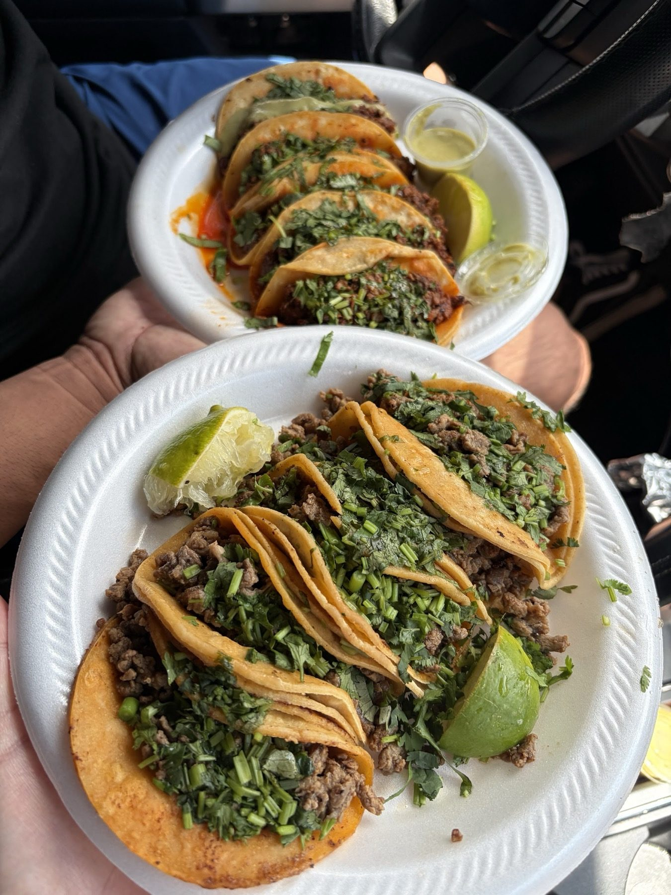

Skip to content
Mini Tacos El Primito
Menu
Home
Menu
Photos
Reviews
Our story
Visit
The photos
From the truck
Plates, the trailer and the board.
All
Food
The truck
Tacos on foil
A plate with a lime wedge
The trailer with its hand-lettered sign
Parked in the lot

Two plates of tacos
Tacos with lime
Tacos and a burrito
The menu board
Call (210) 769-7757